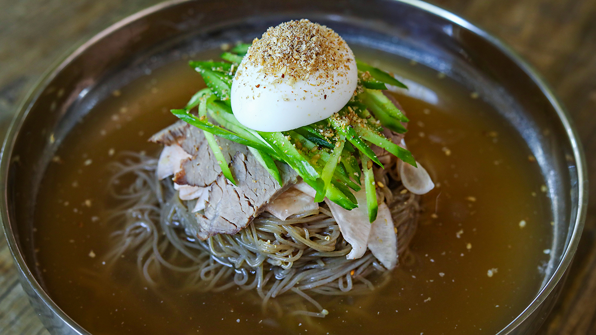

Mul-Naengmyeon

Description:
Mul Naengmyeon or Mul Naengmyun (물냉면) is cold noodles served in a chilled broth made from beef and/or Korean radish water kimchi (dongchimi, 동치미).
Ingredients:
10 ounces (280 grams) dried naengmyeon noodles
2 packets of liquid or powdered concentrated broth that comes with the package of naengmyeon noodles
2 packets of mustard oil that comes with the package of naengmyeon noodles.
English cucumber, cut into thin strips
1 Korean pear (or 2 bosc pears)
½ teaspoon kosher salt
1½ teaspoon sugar
1 tablespoon white or apple cider vinegar
1 hard-boiled egg, cut in halves
2 tablespoons toasted sesame seeds, ground
ice cubes
Make Broth
- Open the packets of the concentrated broth and put them into a bowl. Mix with 4 cups of water.
- Keep in the freezer for 4 to 5 hours so it gets slushy.
Prepare cucumber and pear garnishes
- Make quick pickled cucumbers by combining the sliced cucumber, kosher salt, ½ teaspoon sugar, and vinegar in a bowl. Mix it well and set aside.
- Make sugar water by mixing 1 cup of water and 1 teaspoon sugar.
- Peel the pear and slice into halves. Slice one half into thin strips and soak them in the sugar water to keep them from going brown.
- Grate the other half of the pear and squeeze out the juice using a cotton cloth or cheesecloth. You should get about ½ cup of pear juice. If you use small bosc pears, use one for garnish and the other for pear juice.
- Take the bowl of broth out of the freezer. Squeeze some cucumber brine into the broth and add the pear juice.
- Mix well and put the broth back in the fridge or freezer until the noodles are ready
Prepare Noodles
- Bring a large pot of water to a boil. Add the noodles and stir with a wooden spoon. Cover and let them cook for 3 to 5 minutes.
- Take a sample to taste. When you chew the noodles, there shouldn’t be any hard stuff inside. Be sure not to overcook them or they’ll go soggy.
- Strain and rinse the noodles in cold running water until they aren’t slippery any more and are well cooled.
- Fill a large bowl with cold water and some ice cubes. Add the noodles and rinse them a final time.
- Drain the noodles and divide them into 2 large shallow bowls.
Put it Together
- Pour the icy broth into each bowl.
- Place the cucumber and pear on top.
- Add a packet of mustard oil to each bowl.
- Sprinkle with some sesame seeds powder. Add a half egg on top of each bowl.
- Serve right away.